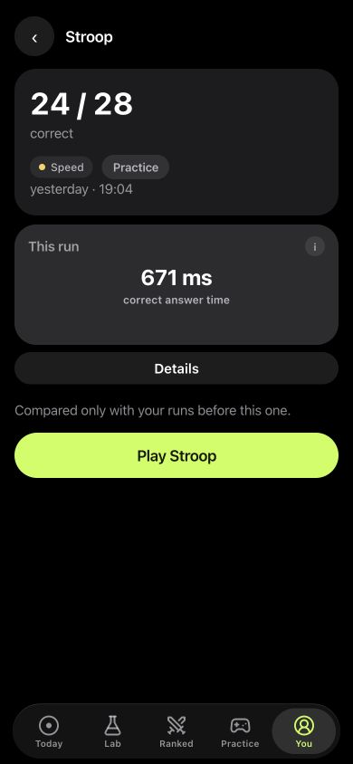

Inside LabRats
A speed change needs an accuracy check.
The saved Stroop demo shows 24 / 28 correct and 671 ms correct-answer time. Those readings answer different questions.
Use the count when reviewing mistakes and the time when reviewing pace. The screenshot does not show a clinical attention assessment or evidence about a substance.
How to keep a focus-task record
- Find Stroop, Flanker or Go / No-Go in Practice.
- Complete a run using the instructions for that specific task.
- Open the saved result in You and read the correct-answer count with its timing.
- Use the Focus choice in a new personal experiment to see a relevant selection of games.
Choose the task that matches the question
In Go/No-Go, you respond to some signals and withhold your response to others. A tap on a no-go signal and a missed go signal mean different things. Stroop and Flanker introduce competing information. Their useful comparison is how performance differs when that information agrees or conflicts. N-back asks you to keep updating a recent sequence.
These are observations from particular tasks, not interchangeable readings of a general “focus level”. LabRats keeps game measurements in their own units where available.
The simple reaction task is useful context when you want to distinguish waiting for one signal from responding under competing demands.
Timing and accuracy belong together
A lower response time can come with more mistakes. An error-free run can come with much slower answers. Read both before describing a change.
Did I respond faster?
Then check whether accuracy or false alarms changed.
Did I make fewer mistakes?
Then check whether I took longer to answer.
For conflict tasks, the difference between compatible and conflicting items can also be more useful than one overall time. Keep the number of observations behind each result in view.
Build a repeatable record
Choose a small set of tasks and keep their format, phone and testing conditions reasonably consistent. Play when you can give the instructions your attention. Note interruptions rather than quietly discarding every inconvenient run.
Your Journal can hold sleep, energy, mood and your own notes. Those details let you revisit a question such as whether late-evening runs differed from morning runs. They do not establish that the time of day caused a difference.
For a substance-related question, keep the nootropic entry or supplement log and the task result as separate parts of the same record.
What these tests cannot answer
An attention game is not an ADHD assessment, a diagnosis or a measure of whether you can safely work or drive. A change in a game result can have several explanations, including practice or a different response strategy.
Use LabRats for a personal record of play. If your question concerns a health symptom, the game result is not a substitute for an appropriate clinical assessment. For a planned comparison of everyday routines, write down a specific question before collecting results.